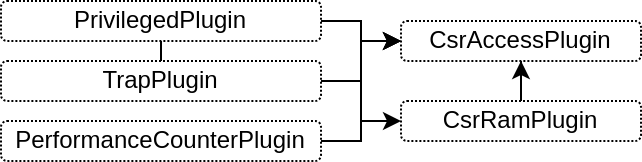

Privileges
RISC-V specifies in "Volume 2, Privileged Specification" most of its special registers (CSR) which allows to handle things as :
Traps (interrupts + exceptions)
Memory protections (MMU, PMP)
Privilege modes (Machine, Superivisor, User)
A microcontroller will typicaly only need Machine mode, maybe User mode, while a Linux capable CPU will normaly need them all.
Machine mode : Baremetal / Bootloader / BIOS / OpenSBI / RTOS
Supervisor mode : Kernel / Linux
User mode : Applications running on the top of linux
Those are handled in VexiiRiscv via a sets of plugins.
CsrAccessPlugin
Implement the CSR read and write instruction in the execute pipeline
Provide an API for other plugins to specify the mapping between the CSR registers and the CSR instruction
For instance, when another plugin want to add a custom CSR, it can do as follow :
class CustomPlugin() extends FiberPlugin {
val logic = during setup new Area{
val cp = host[CsrService] // CsrAccessPlugin is an implementation of CsrService
val buildBefore = retains(cp.csrLock) // This ensure that the CsrService hold one until we are finished with the API usages
awaitBuild()
// Define a few registers
val regX = Reg(UInt(8 bits)) init(0)
val regY = Reg(UInt(8 bits)) init(0)
// Map those registers in the RISC-V CSRs at address 0xFF0.
// - Bits 17:10 will be regX
// - Bits 27:20 will be regY
cp.readWrite(0xFF0, 10 -> regX, 20 -> regY)
// Now that we are with the csr API, we allows it to elaborate
buildBefore.release()
}
}
PrivilegedPlugin
Implement the RISC-V privileged spec, mostly by using the CsrAccessPlugin API
Use the CsrRamPlugin to implement various CSR as MTVAL, MTVEC, MEPC, MSCRATCH, ...
By default only the machine mode is enabled.
You can use --with-supervisor and --with-user` to enable the corresponding privileged modes
CsrRamPlugin
Provide an API which allows to statically allocate space on it
Provide an API to create read / write ports on it
Used by various plugins to store the CSR contents in a FPGA efficient way
TrapPlugin
Implement the trap buffer / FSM
The FSM implement the core logic of many special instructions (MRET, SRET, ECALL, EBREAK, FENCE.I, WFI, ...)
Also allows the CPU pipeline to emit hardware traps to re-execute (REDO) the current instruction or to jump to the next one after a full pipeline flush (NEXT).
the REDO hardware trap is used by I$ D$ miss, the DecodePlugin when it detect a illegal branch prediction
the NEXT hardware trap is used by the CsrAccessPlugin when a state change require a full CPU flush
PerformanceCounterPlugin
Implement the privileged performance counters in a FPGA friendly way :
Use the CsrRamPlugin to store 57 bits for each performance counter
Use a dedicated 7 bits hardware register per counter
Once that 7 bits register MSB is set, a FSM will flush it into the CsrRamPlugin
By default, this plugins is disabled, to enable it, you can use, for instance, --performance-counters 9
EnvPlugin
Implement a few instructions as MRET, SRET, ECALL, EBREAK, FENCE.I, WFI by producing hardware traps
Those hardware trap are then handled in the TrapPlugin FSM
MmuPlugin
Implements supervisor mode memory protections
Include a hardware page walker
Has a TLB to store the page walker results
TLB are stored in multiples directly mapped memories. Typicaly 2 way x 32 TLB for 4KB pages + 1 way x 32 TLB for mega pages
Map very well with FPGA which supports asyncronous read memory (LUT based RAM)
Can be configured to work with syncronous read memory (block ram), but will likely be your critical path for timings
This plugin is enabled via --with-mmu or --with-supervisor
PmpPlugin
Allows the machine mode to restrict memory accesses of the supervisor/user mode to specific ranges (Physical Memory Protection)
Quite expensive in resources and timings.
Support NAPOT (aligned power of 2 sized regions)
Support TOR (unrestricted region address/size)
You can disable the RISC-V TOR support to help with area and timings via --pmp-tor-disable
You can set the granularity of the memory regions (to improve timings and area usage). This throw away some of the address LSB bits. By default, the granularity is 4KB (--pmp-granularity=4096). Minimum allowed is 4.
By default, the PmpPlugin is disabled, but you can enable it via, for instance, --pmp-size=4, which will enable 4 hardware PMP registres, allowing you to set up to 4 memory regions.